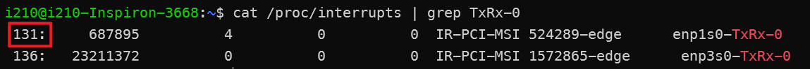

TSNPerf 使用指南 #
硬件准备 #
准备两台机器，一台作为发送方Publisher，一台作为接收方Recorder，每一台上的硬件需满足以下条件
- Intel 八代及以上的处理器
- Intel I210 / I225-LM / I225-LM 网卡
注意：Publisher上需要安装两个网卡，一个负责时间同步，一个负责发送数据包。Recorder上只要安装一个网卡，该网卡同时负责时间同步和数据接收。
系统准备 #
在发送发和接收方的机器上，安装以下系统与软件依赖
- 安装 Ubuntu 22.04
- 安装 Intel ECI https://eci.intel.com/docs/3.1/getstarted/requirements.html
- 安装linuxPTP，参考下一章节
- 安装依赖
sudo apt-get install libconfig-dev libpcap-dev
在进行实验前，请将待测设备与Publisher、Recorder按照合适的方式连接，并开机启动。
启用时间同步 #
安装linuxPTP #
1. 安装网卡驱动 #
下载驱动，参照压缩包中 README 的教程编译安装驱动。
使用下面的命令检查安装（enp3s0为网卡名）。如安装成功，应有下图红框中的输出（表示网卡具有硬件时间戳功能）：
ethtool -T enp3s0
2. 安装linuxPTP #
按照以下命令安装linuxPTP
git clone http://git.code.sf.net/p/linuxptp/code linuxptp
cd linuxptp/
make
sudo make install
同步Publisher与Recorder的网卡时钟 #
用以下命令启动Publisher和Recorder的时间同步网卡。enp3s0为网卡名，<configuration>.cfg为配置文件，可参考linuxptp/configs/中的文件，并结合需求写该配置。
sudo ptp4l -i enp3s0 -f <configuration>.cfg -m -l 6 --socket_priority 7
注意：如有需要，请同时启动待测设备的时间同步功能
同步网卡时钟与系统时钟 #
Publisher和Recorder的两张网卡同步完成后，再将网卡时钟与系统时钟同步上。
sudo phc2sys -c CLOCK_REALTIME -s enp3s0 -O -0 -m -l 6
由于Publisher上时间同步与数据包发送使用了不同的网卡，请将发送数据包的网卡上的时钟也与系统同步上
sudo phc2sys -s CLOCK_REALTIME -c enp1s0 -O -0 -m -l 6
优化网络栈 #
将关键流量绑定到 Queue 0 #
在Publisher和Recorder上执行以下命令，将关键流量绑定到 Queue 0 上。
sudo ethtool --config-ntuple enp1s0 delete 15
sudo ethtool --config-ntuple enp1s0 flow-type ether proto 0xb62c loc 15 action 0
sudo ethtool -X enp1s0 equal 2
注意：
enp1s0代表Publisher上负责发送数据包的网卡，或者Recorder上的网卡。- 第2行命令中的
0xb62c代表关键流量的类型，请保持该值与下一章节中ethertype一致。
绑定 Queue 0 中断到隔离核心，并设置优先级 #
在Publisher和Recorder上执行以下命令。
绑定到隔离核心
cat /proc/interrupts | grep TxRx-0

sudo sh -c "echo 2 > /proc/irq/131/smp_affinity"
设置优先级
ps -ae | grep 131
sudo chrt -fp 95
开启 LaunchTime 功能 #
在Publisher上开启 LaunchTime 功能
sudo tc qdisc add dev enp1s0 handle 8001: parent root mqprio num_tc 4 map 0 1 2 3 3 3 3 3 3 3 3 3 3 3 3 3 queues 1@0 1@1 1@2 1@3 hw 0
sudo tc qdisc replace dev enp1s0 parent 8001:1 etf offload clockid CLOCK_TAI delta 500000
修改配置文件 #
根据测试需求，修改配置文件，以下是一个示例配置 default.ini
mode: 0
tx-mode: 0
verbose: true
use-ziggo-analysis: false
pcap-filename: "/home/i210/launchtimedemo/captured_10w_1500Byte.pcap"
interface: "enp1s0"
smac: "00:1b:21:77:ac:ae"
dmac: "00:1b:21:76:ae:75"
ethertype: 0xb62c
socket-priority: 0
vlan-priority: 0
offset: 150000
early-offset: 300000
use-launchtime: true
basetime: 1684559640000000100L
packet-size: 1500
packets-to-send: 100000
interval: 1000000
use-udp: true
sip: "192.168.16.10"
dip: "192.168.16.11"
sport: 10000
dport: 10000
下面是每个配置参数的含义：
- mode：运行模式，INT类型。0 表示发送，1 表示接收。目前仅支持发送功能。
- tx-mode：发送模式，INT类型。0 表示 完全按照pcap文件中的时间戳，重放数据包；1 表示 按顺序每周期发送一个pcap文件中的数据包；2 表示 每个周期发送一个构造的数据包； 3 表示 全力向网络中发送数据包（用于带宽保证测试）。
- verbose：是否输出额外的信息，BOOL类型。主要包括每发出一个数据包的 序号 和 tx 时间戳。
- use-ziggo-analysis：是否使用ZIGGO测试模式，BOOL类型。使用 ZIGGO 测试，会将 tx 时间戳 打印在ethernet数据包的第20个字节开始（从0编号）的8个字节；否则会使用 Intel 测试模式，会将 tx 时间戳 打印在第26个字节开始的8个字节；
- pcap-filename：需要重放的 pcap 文件，STRING类型。当tx-mode=0/1时有效。
- interface：网口名字，STRING类型。
- smac，dmac：源/目的mac地址，STRING类型。
- ethertype：数据包类型，INT类型。当tx-mode=2/3时有效。
- socket-priority, vlan-priority：数据包类型，INT类型。vlan相关参数，默认值为0。当tx-mode=2/3时有效。
- offset：提前调用send的时长，单位ns，INT类型。当use-launchtime为true时有效。
- early-offset：给网络栈处理预留的时长，单位ns，INT类型。当use-launchtime为true时有效。
- use-launchtime：是否使用 launchtime，BOOL类型。只有当使用 launchtime 时，数据包的tx时间戳精度才是亚微秒级别。注意：目前，当且仅当仅支持tx-mode=2时，可将use-launchtime设置为false。
- basetime：INT64类型。整个网络设备共享的基准时间，用于调整数据包的发送时间，与交换机的门控配合。
- packet-size：数据包大小，INT类型。单位Byte。当tx-mode=2/3时有效。
- packets-to-send：发送数据包的数量，INT类型。
- interval：一个周期的时长，INT类型。单位ns。当tx-mode=1/2时有效。
- use-udp：是否使用udp填充以太网报文，BOOL类型。注意：目前，当且仅当仅支持tx-mode=2/3时，可将use-udp设置为true。
- sip：原ip地址，STRING类型。注意ip地址是字符串，需要加上引号。
- dip：目的ip地址，STRING类型。注意ip地址是字符串，需要加上引号。
- sport：原端口号，INT类型。
- dport：目的端口号，INT类型。
在Publisher启动接收程序 #
接收程序可以使用 Intel 的 txrx-tsn 中的接收模式，配合 use-ziggo-analysis = false，其打出来的 log 可以直接拿到数据包的发送时间戳和接收时间戳。 但是实验中发现，该程序与iperf打背景流量冲突，可以考虑用tcpdump抓包，并保存高精度的 rx 时间戳，tx时间戳可以从发送端的程序输出获得，从而进行分析。
sudo tcpdump -i <网口> ether proto 0xb62c -j adapter_unsynced --time-stamp-precision=nano -s 0 -tttt -w <存储的pcap文件>
在Recorder启动发送程序 #
cd /path/to/launchtimedemo
make
sudo taskset -c 1 chrt -f 92 ./pcap_replay -c ~/launchtimedemo/config.ini